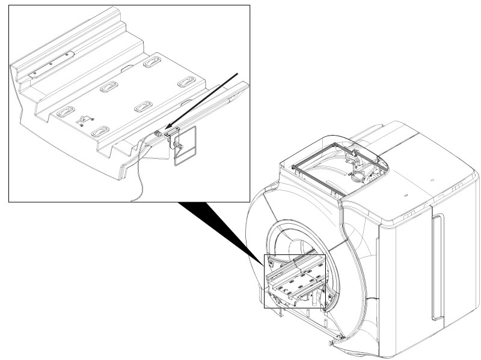
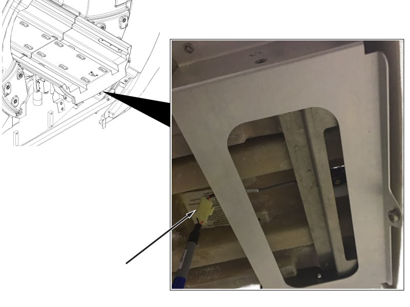
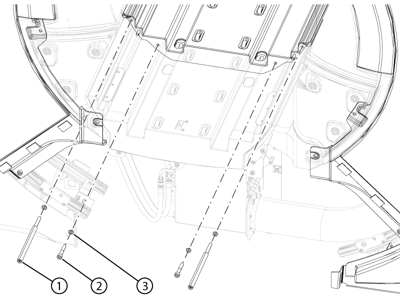
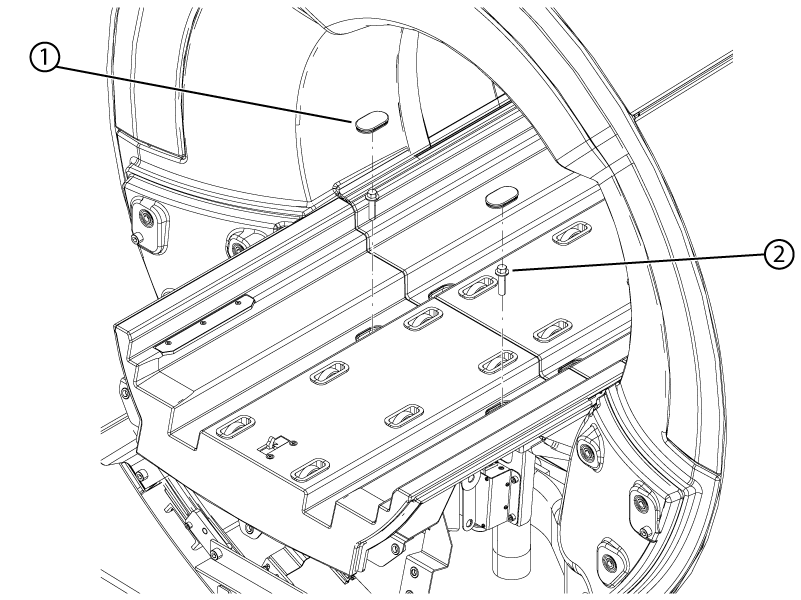
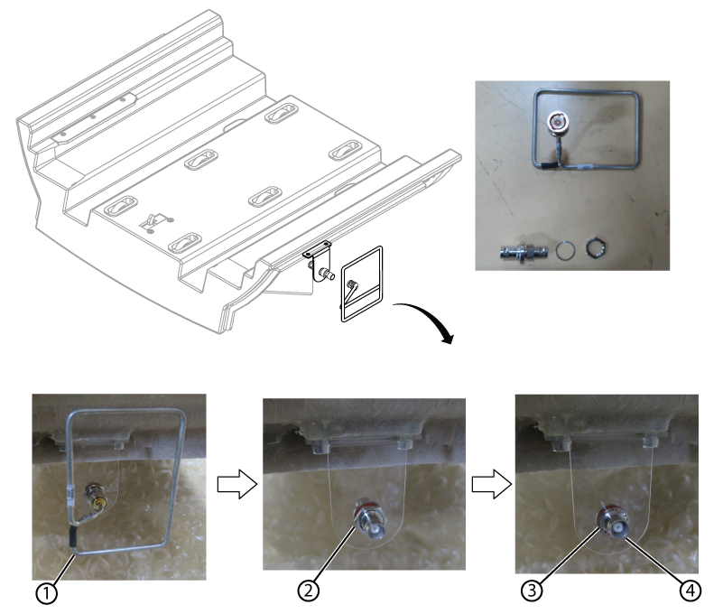

Removes the fixed table rear bridge from the front bridge.
Prerequisites
| Personnel requirements |
|---|
| Required persons | Preliminary requirements | Procedure | Finalization |
|---|
| 1 | - | 10 minutes | - |
| Tools and test equipment |
|---|
| Item | Quantity | Part number | Manufacturer |
|---|
| Nonmagnetic Titanium Service Tool Kit, Small Set | 1 | 5113258 | - |
| Required conditions |
|---|
| Rear bridge inner cover is removed. |
Procedure
- Disconnect the BNC connector from the Universal Transient Noise Suppression (UTNS) antenna assembly.
Figure 1. UTNS antenna connector
- Disconnect the end of travel switch.
Figure 2. End of travel switch connector
- Remove the four fasteners and four washers securing the rear bridge to the front bridge.
Figure 3. Rear bridge bottom screws
| 1 | Extended fastener |
| 2 | Screw |
| 3 | Washer |
- Remove the two rubber caps, top screws, and washers securing the rear bridge.
Figure 4. Rear bridge top screws
- Remove the rear bridge from the front bridge.
- If the rear bridge is being replaced, remove the UTNS antenna assembly as follows and retain all parts for the replacement rear bridge:
- Disconnect the UTNS antenna from the BNC adapter.
Figure 5. UTNS antenna removal
| 1 | UTNS antenna |
| 2 | Nut |
| 3 | Washer |
| 4 | BNC adapter |
- Remove the nut securing the BNC adapter.
- Remove the washer from the BNC adapter.
- Remove the BNC adapter from the bracket.